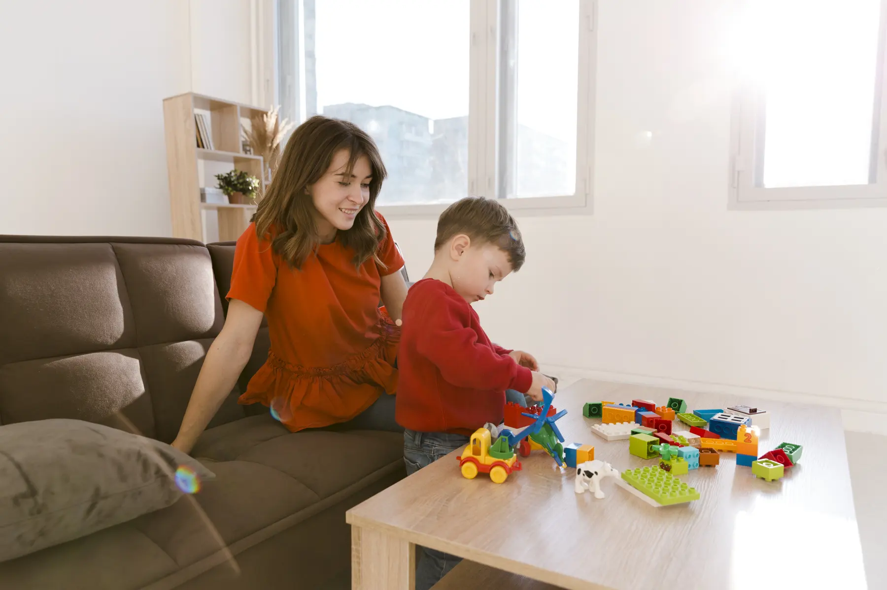

Atendimento em todo o Estado de São Paulo
Orientação jurídica sobre BPC/LOAS, auxílio-acidente, auxílio-doença e salário-maternidade. Analisamos sua situação e mostramos os caminhos possíveis.
Toque na opção mais parecida com a sua realidade e fale com a equipe já sobre o assunto certo.

Mais procurado 01 BPC/LOAS para autistas (TEA) Orientação para famílias que buscam entender os critérios do benefício assistencial para pessoas com deficiência. Iniciar atendimentoInformação clara, sem juridiquês. Nenhum benefício é automático: cada caso precisa ser analisado.
BPC/LOAS · Autismo
A lei reconhece a pessoa com TEA como pessoa com deficiência. O benefício pode ser concedido quando ela atende aos critérios legais. É um salário mínimo por mês e não exige contribuição ao INSS.
BPC/LOAS · Idosos
O BPC pode ser uma alternativa para idosos que atendam aos critérios legais, mesmo sem histórico de contribuição previdenciária.
Auxílio-acidente
O auxílio-acidente pode ser devido ao segurado que atenda aos requisitos legais e tenha ficado com redução permanente da capacidade para o trabalho que exercia.
Auxílio-doença
Uma negativa não significa, necessariamente, que você não tenha direito. Vale analisar com cuidado antes de desistir.
Salário-maternidade
Determinadas situações permitem receber o salário-maternidade mesmo sem carteira assinada no momento, conforme o histórico previdenciário e os requisitos aplicáveis.
Nossos diferenciais
Uma estrutura pensada para que você seja ouvido com atenção e entenda cada passo do seu caso.
Dr. Luciano, Dr. Luiz e Dr. Giovanni atuam juntos, com o suporte de uma equipe de atendimento dedicada.
Você começa o atendimento de onde estiver, sem precisar se deslocar para o primeiro contato.
O primeiro passo é simples: você conta sua situação por mensagem, no seu tempo.
Explicação clara, sem juridiquês, para você entender o que está acontecendo no seu caso.
Cada caso é olhado com atenção, a partir dos seus documentos e da sua história.
Orientação responsável, sem promessas de resultado e com clareza sobre as possibilidades.
Como funciona
Conte brevemente sua situação pelo WhatsApp.
A equipe realiza o primeiro atendimento para compreender sua necessidade e identificar os próximos passos.
O caso é encaminhado para avaliação jurídica e orientação sobre as possibilidades existentes.

O escritório
O Luciano Lopes Advocacia é um escritório sediado em São Paulo, com estrutura para atender pessoas de todo o Estado. Na área previdenciária, a equipe orienta famílias, idosos, trabalhadores e mães sobre benefícios do INSS e benefícios assistenciais.
Cada atendimento começa pela escuta: entender sua história, olhar os documentos com cuidado e explicar as possibilidades com clareza.
Dr. Luciano Lopes
Advogado responsável
Dr. Luiz
Advogado
Dr. Giovanni
Advogado
Com o suporte da equipe de atendimento, que faz o primeiro contato pelo WhatsApp.
Dúvidas frequentes
Cada benefício tem requisitos próprios. As respostas são informativas e não substituem a análise do seu caso.
Tirar uma dúvida pelo WhatsAppA lei reconhece a pessoa com Transtorno do Espectro Autista (TEA) como pessoa com deficiência. O BPC/LOAS pode ser concedido quando há impedimento de longo prazo, confirmado pela perícia médica e pela avaliação social do INSS, e quando a renda da família por pessoa se enquadra nos critérios legais. Também é exigida inscrição atualizada no CadÚnico. Cada caso precisa ser analisado individualmente.
Sim, em algumas situações. O BPC/LOAS é um benefício assistencial e não exige contribuição. Ele pode ser destinado a idosos com 65 anos ou mais e a pessoas com deficiência que cumpram os critérios de renda e os demais requisitos. O BPC não é aposentadoria: não paga 13º salário e não deixa pensão por morte.
A idade mínima é de 65 anos, para homens e mulheres. Além da idade, o INSS analisa a renda da família por pessoa e exige inscrição atualizada no CadÚnico. Ter a idade, sozinha, não garante o benefício.
O primeiro passo é entender o motivo da negativa, que aparece na decisão disponível no Meu INSS. Depois, é importante reunir laudos, exames e relatórios médicos atualizados. Conforme o caso, pode ser possível apresentar recurso administrativo (que tem prazo, em regra de 30 dias), fazer um novo pedido ou buscar a via judicial. A melhor alternativa depende da análise da sua situação.
Pode ter direito o segurado que, após um acidente de qualquer natureza, ficou com sequelas permanentes que reduzem a capacidade para o trabalho que exercia habitualmente. O benefício tem caráter indenizatório e pode ser recebido junto com o salário. Nem todas as categorias de segurado têm acesso a ele, por isso o histórico de trabalho e de contribuições precisa ser analisado.
Em algumas situações, sim. Mesmo sem emprego, a mãe pode manter a chamada qualidade de segurada por um período após a última contribuição, e esse prazo varia conforme o histórico. Autônomas e MEIs também podem ter direito, desde que cumpram os requisitos da sua categoria. Por isso, é importante verificar o histórico de contribuições antes de qualquer pedido.
Você entra em contato pelo WhatsApp e conta brevemente sua situação. A equipe faz o primeiro atendimento, entende sua necessidade e pode pedir algumas informações ou documentos. Em seguida, o caso é encaminhado para avaliação jurídica, e você recebe orientação sobre as possibilidades existentes.
Entre em contato com nossa equipe e saiba como iniciar a análise da sua situação.